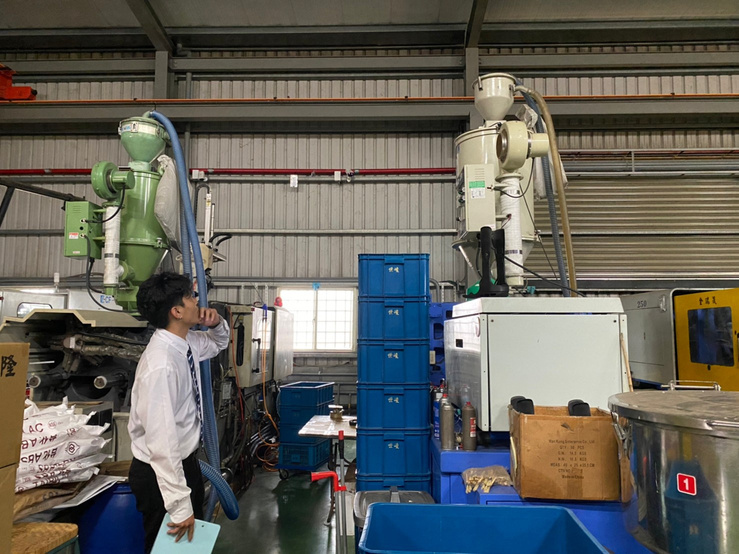
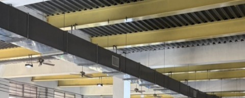
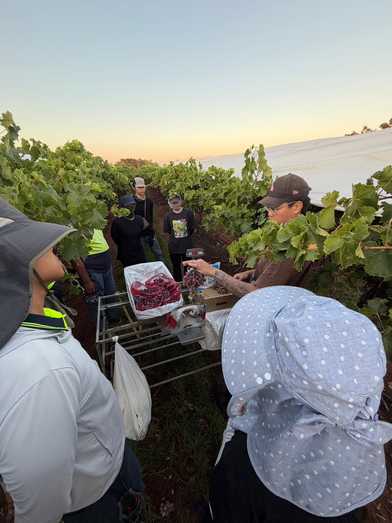
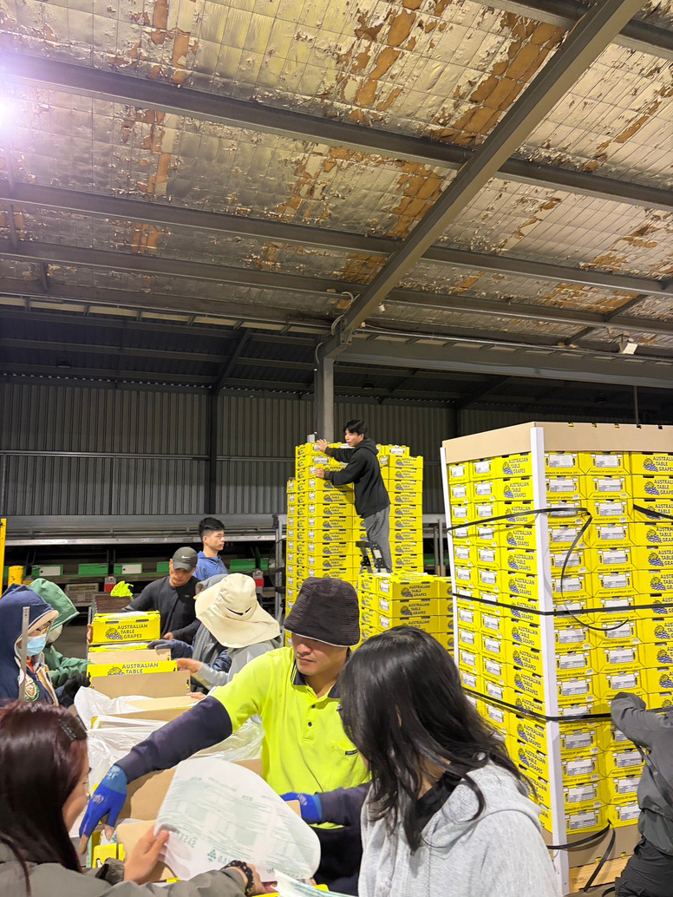

導入與使用者支援
SAP B1 功能設定與客製化、資料匯入、系統測試，以及使用者教育訓練。
SAP BUSINESS ONE ／ 個人作品集
理解需求，
讓系統真正派上用場。
製造業 SAP Business One 維運工程師，
也是系統串接的主要負責人。
近期規劃：BPM 與 SAP B1 串接。
從行銷與客戶服務出發，
我逐步投入 ERP 顧問工作。
我畢業於長榮大學國際企業學系，曾參與 SAP Business One 系統導入、需求分析、報表開發與使用者支援。喜歡先理解使用者遇到的問題，再透過資料與系統，尋找可行的做法。
門市、會展與行銷的經驗，讓我練習與不同背景的人溝通。澳洲的工作經驗，則讓我更貼近現場作業與團隊合作。
曾參與四類產業的
SAP Business One 導入。
連結企業需求與系統實作。
SAP B1 功能設定與客製化、資料匯入、系統測試，以及使用者教育訓練。
T-SQL、HANA SQL、預存程序、Crystal Reports、FMS 與 DTW。
採購、銷售、庫存、生產與財務流程理解，並具備 Salesforce 串接經驗。

走進現場，理解管理需求。塑膠射出成型產業
釐清模具所有權、數量、維護資訊與資產殘值，規劃相應的 SAP 管理方式。
讓管理人員掌握模具種類與數量，降低重複製作模具的風險，並追蹤殘值，支援資產管理決策。
本案例為實習／模擬規劃，以上為預期效益，非已驗證的量化成果。
2026 年 7 月起，我在科技製造業負責 SAP Business One 維運與系統串接。這次探訪帶回的製造指示單，呈現了產線如何記錄一張工單需要的物料與作業順序。
我負責 SAP B1 端的系統串接，接下來預計串接企業流程管理系統（BPM）。
針對貨已到廠、尚待檢驗的情境，規劃在採購單與收貨採購單之間記錄暫收與品檢，使到貨紀錄與正式入庫分開。
以工單分批生產為情境，釐清部分發料、完工收貨與系統自動扣帳之間的關係，檢視資源用量應如何計算。
整理正式環境上線人員名單，並調整教育訓練手冊中的考核項目標示，供上線準備使用。
在模具管理的實習規劃中，我把現場需求拆成幾個問題：哪些模具是客戶提供的？維修時要用哪些備品？管理者要到哪裡查看殘值？這些問題決定了系統需要留下哪些紀錄。
我協助系統測試與使用者驗收，也整理操作步驟和流程文件，讓使用者遇到問題時有地方可以查。
中華企業資源規劃學會
學習 SAP 核心模組，參與企業開發與案例規劃。
大綜電腦系統股份有限公司
參與 SAP Business One 導入，進行 SQL 與報表開發、技術支援及客戶需求溝通。
澳洲甲方公司
協助系統測試、使用者驗收測試、操作支援，以及 SOP 與流程文件整理。
科技製造業
負責 SAP B1 日常維運，並擔任其他系統與 SAP B1 串接的主要負責人。
我喜歡了解事情如何運作，
也喜歡記錄眼前的細節。
澳洲工作經驗
參與採收、分選與包裝現場管理，協助新進人員訓練，確認出貨品質。從現場作業中，體會流程與團隊配合的重要。


點選照片放大欣賞
下一段經驗，從交流開始。
期待在 SAP／ERP 導入與系統整合領域，
持續累積經驗，協助企業解決問題。